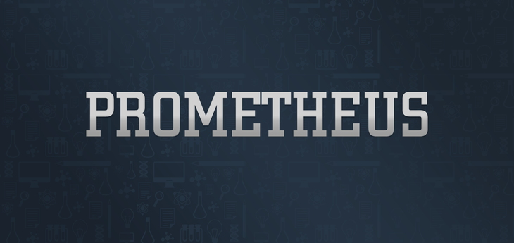
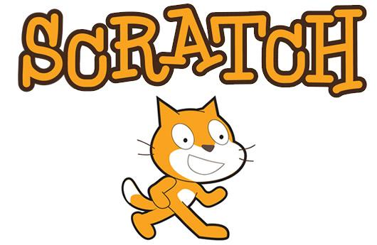
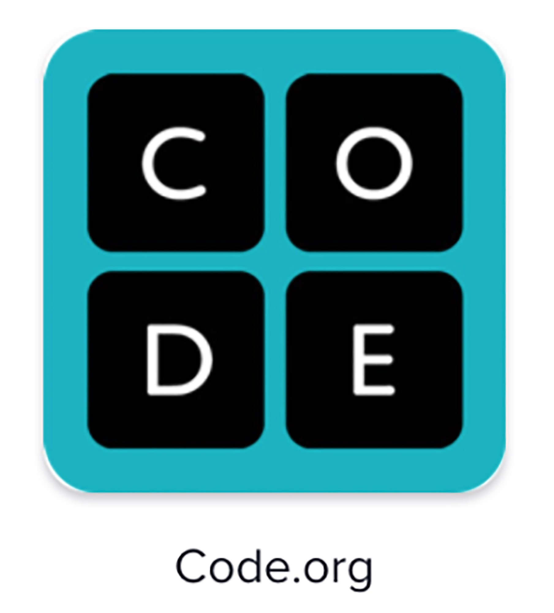
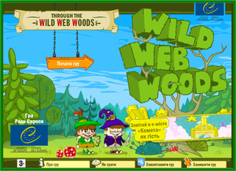

Корисні посилання для учнів та вчителів
Prometeus
«Prometheus» – громадський проект масових відкритих онлайн-курсів (МВОК). У співпраці з викладачами кращих ВНЗ України на платформі створюються та розміщуються МВОК та надається безкоштовна можливість університетам, організаціям та провідним компаніям публікувати та розповсюджувати курси на цій платформі. Надається безкоштовний онлайн-доступ до найкращих навчальних курсів університетського рівня всім охочим в Україні.
Детальніше за посиланням prometheus.org.ua
Scratch
Зі Скретчем ви можете програмувати свої власні інтерактивні історії, ігри, анімацію — і поділитися своїми творами з іншими членами інтернет-спільноти. Скретч допомагає молоді вчитися мислити творчо, міркувати системно і працювати спільно - необхідні навички для життя в 21-му столітті. Скретч є проектом Lifelong Kindergarten Group з MIT Media Lab. Він надається безкоштовно.
Детальніше за посиланням scratch.mit.edu/
Bristar
Брістар - це арт-студія, яка розроблює ігри для розвитку дитини. На данний момент ми створили більше 20 освітніх ігор, що охоплюють різні предмети і вікові групи. Серед нас працюють професійні художники, програмісти та ігрові сценаристи, які мають досвід в розробці ігор. Ми дбаємо про дітей і їхнє виховання, а також прагнемо створювати цікаві, приємні і ефективні засоби заохочення і сприяти їх прагненню до знань. Багато з наших колег - самі батьки, тому ми знаємо, що потрібно дітям, і в чим їх можна зацікавити. Ми хочемо, щоб освіта була цікавою, доступною і відповідала вимогам сучасного суспільства. Граємо та навчаємось разом!"
Детальніше за посиланням https://bristarstudio.com
Code.org
Code.org - це неприбуткова організація, яка займається розширенням доступу до інформатики в школах і збільшенням участі жінок і менших меншин. Наше бачення полягає в тому, що кожен студент у кожній школі має можливість вивчати інформатику, як біологія, хімія або алгебра. Ми пропонуємо найбільш широко використовувані навчальні програми для викладання інформатики в початковій та середній школі, а також організовуємо щорічну кампанію « Година коду» , яка залучила 10% всіх студентів у світі. Code.org підтримується щедрими донорами, включаючи Amazon, Facebook, Google, Фонд Infosys, Microsoft і багато іншого.
Детальніше за посиланням code.org
Wild Web Woods
За останні десять років Інтернет змінив життя людей. Він має свої позитивні сторони, але може також бути небезпечним для тебе. Багато матеріалів в Інтернеті мають протизаконний характер, а використання нечесних методів завдає шкоди людям та призводить до порушення прав людини. Пропонуємо гру, яка навчить тебе уникати пасток в Інтернеті та вправно їм користуватись, у той же час розважаючись та знаходячи в цьому задоволення. В основу гри покладено довідник Ради Європи «Інтернет-грамотність», що містить багато корисних порад. Вперед! Бажаємо перемоги!
Детальніше за посиланням www.wildwebwoods.org
Tux Paint
Tux Paint — це вільна, відзначена нагородами програма малювання для дітей від 3 до 12 років (наприклад, у дитячому саду та початковій школі). Tux Paint is used in schools around the world as a computer literacy drawing activity. Її відрізняє легкий в освоєнні інтерфейс та веселі звукові ефекти. Мальований персонаж (пінгвін Тукс) допоможе дітям в освоєнні програми. Полотно та набір інструментів для малювання допоможуть розвинути творчі здібності Вашої дитини.
Детальніше за посиланням www.tuxpaint.org/